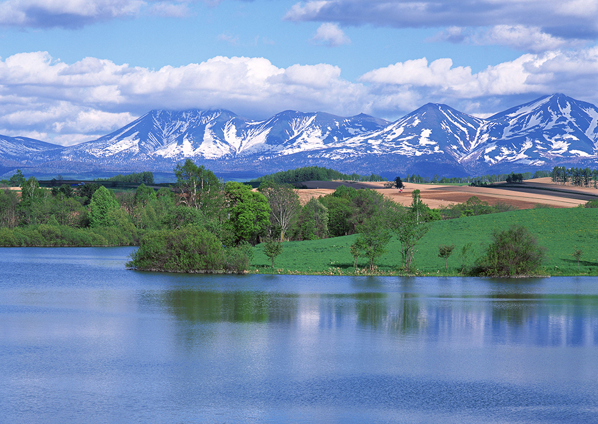

Traveling In Japan
If you have ever wanted to go to Japan, check out these tips and locations, to make the most out of your vacation! Japan has beautiful scenery and urban spots that will grab your attention for the beauty and design. This website will go into two Provinces within Japan. Tokyo being the urban experience and Niseko, Hokkaido being the natural immersion.

<<
TOKYO
<<
HOKKAIDO